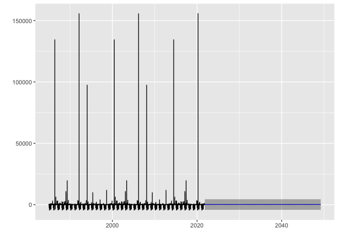

Pull flood data
Ty Tuff, ESIIL Data Scientist 2023-10-27
Global Active Archive of Large Flood Events, 1985-Present
Housed at the Dartmouth Flood Observatory (DFO) and maintained by the University of Colorado, the Global Active Archive of Large Flood Events is a comprehensive repository that records significant flood events from 1985 to the present day. This dynamic and “active” archive continually incorporates data from contemporary flood events, ensuring the information remains current and relevant.
Key Features:
-
Diverse Data Sources: The information within the archive is meticulously collated from a wide array of sources, including news reports, governmental agencies, instrumental measurements, and satellite remote sensing.
-
Granular Event Details: Each recorded flood event within the archive is distinct, and its associated details are presented in an “area affected” map. Despite the discrete nature of these records, it’s acknowledged that certain regions experience recurrent flooding, which may necessitate a nuanced approach in classifying such events.
-
Comprehensive Coverage: The archive boasts a global purview, capturing the magnitude and impact of significant flood events worldwide. It’s noteworthy that while death and displacement estimates from tropical storms encompass all causative factors, storms devoid of notable river flooding aren’t incorporated.
-
Accessible Formats: The archive is versatile in its presentation:
- An online table enumerates recent flood events.
- Detailed records from 1985 onwards are accessible in both Excel (.xlsx and .xml) formats. These are periodically updated.
- GIS users can tap into zip-compressed MapInfo and Shp format files that elucidate flood catalog numbers, centroids, and other salient attribute details.
-
Satellite Imaging: A considerable number of flood events have been vividly captured through satellite imaging. These have been further processed by the DFO to generate detailed maps delineating inundation extents. An index of these maps is accessible via the DFO Flood Maps Index.
- For those interested in understanding the methodology behind the creation of these invaluable maps and tables, additional notes and insights are available within the archive.
The Global Active Archive, given its academic and research-oriented nature, is generously made available at no charge for scholarly pursuits and educational endeavors.
Sample Citation: G.R. Brakenridge. Global Active Archive of Large Flood Events. Dartmouth Flood Observatory, University of Colorado, USA.
Flood data file types available for download
{kind=link}
Here is arial imagery for some floods
Load Libraries
The code chunk provided is written in R and is used for loading multiple libraries/packages. These libraries contain functions and tools that extend the capabilities of R for various tasks. Specifically:
glue: Provides tools to format R strings with embedded code. sf: Used for handling and analyzing spatial data. terra: Offers tools for spatial data handling and analysis. ggplot2: A popular data visualization package in R. dplyr: Part of the tidyverse and is used for data manipulation. ggthemes: Adds extra themes, geoms, and scales to ggplot2. forecast: Used for time series forecasting.
When executed, this code will make the functions and tools from these libraries available for use in the R session.
library(glue)
library(sf)
Linking to GEOS 3.11.0, GDAL 3.5.3, PROJ 9.1.0; sf_use_s2() is TRUE
library(terra)
terra 1.7.39
Attaching package: 'terra'
The following object is masked from 'package:glue':
trim
library(ggplot2)
library(dplyr)
Attaching package: 'dplyr'
The following objects are masked from 'package:terra':
intersect, union
The following objects are masked from 'package:stats':
filter, lag
The following objects are masked from 'package:base':
intersect, setdiff, setequal, union
library(ggthemes)
library(forecast)
Registered S3 method overwritten by 'quantmod':
method from
as.zoo.data.frame zoo
library(lubridate)
Attaching package: 'lubridate'
The following objects are masked from 'package:terra':
intersect, union
The following objects are masked from 'package:base':
date, intersect, setdiff, union
library(ggfortify)
Registered S3 methods overwritten by 'ggfortify':
method from
autoplot.Arima forecast
autoplot.acf forecast
autoplot.ar forecast
autoplot.bats forecast
autoplot.decomposed.ts forecast
autoplot.ets forecast
autoplot.forecast forecast
autoplot.stl forecast
autoplot.ts forecast
fitted.ar forecast
fortify.ts forecast
residuals.ar forecast
library(changepoint)
Loading required package: zoo
Attaching package: 'zoo'
The following object is masked from 'package:terra':
time<-
The following objects are masked from 'package:base':
as.Date, as.Date.numeric
Successfully loaded changepoint package version 2.2.4
See NEWS for details of changes.
Connect to api
The R code provided is designed to retrieve and preprocess flood data from a public API. Here’s a step-by-step breakdown:
- Using the glue function, a URL is created that points to an Excel file (FloodArchive.xlsx) hosted on the Flood Observatory website.
- vect() reads this URL, which is effectively an Excel file, treating it as a spatial vector.
- as.data.frame() is used to convert the spatial vector to a dataframe.
- st_as_sf() converts the dataframe to a spatial dataframe with longitude and latitude coordinates.
- The following mutate() functions are utilized: Convert the ‘Began’ and ‘Ended’ columns into POSIXct date-time format.
- Convert ‘Validation’ and ‘MainCause’ columns into factors.
- Compute the logarithm (base 10) of the ‘Dead’ and ‘Displaced’ columns and store them as ‘log_dead’ and ‘log_displaced’, respectively.
- Finally, the select() function keeps only specific columns from the dataframe, providing a cleaner, more focused dataset.
After processing, the flood_point_data dataframe is displayed, showing the cleaned and transformed flood data.
# Connect to API: https://floodobservatory.colorado.edu/temp/
flood_point_data <- glue("/vsicurl/https://floodobservatory.colorado.edu/temp/FloodArchive.xlsx") %>%
vect() %>%
as.data.frame() %>%
st_as_sf(coords = c("long","lat")) %>%
mutate(Began = as.POSIXct(strptime(Began, format="%y/%m/%d"))) %>%
mutate(Ended = as.POSIXct(strptime(Ended, format="%y/%m/%d"))) %>%
mutate(Validation = as.factor(Validation)) %>%
mutate(MainCause = as.factor(MainCause)) %>%
mutate(log_dead = log10(Dead)) %>%
mutate(log_displaced = log10(Displaced)) %>%
mutate(log_area = log10(Area)) %>%
select(Began, Ended, ID, GlideNumber, Country,
OtherCountry, Area, Validation, Dead, Displaced,
MainCause, Severity, log_dead, log_displaced,log_area, geometry)
flood_point_data
Simple feature collection with 5130 features and 15 fields
Geometry type: POINT
Dimension: XY
Bounding box: xmin: -173.454 ymin: -52.9076 xmax: 179.651 ymax: 68.1591
CRS: NA
First 10 features:
Began Ended ID GlideNumber Country OtherCountry Area Validation
1 <NA> <NA> 1 0 Algeria 0 92615.67 News
2 <NA> <NA> 2 0 Brazil 0 678498.82 News
3 <NA> <NA> 3 0 Phillipines 0 12846.03 News
4 <NA> <NA> 4 0 Indonesia 0 16542.12 News
5 <NA> <NA> 5 0 Mozambique 0 20082.21 News
6 <NA> <NA> 6 0 Comoros islands 0 1035.61 News
7 <NA> <NA> 7 0 New Zealand 0 7871.37 News
8 <NA> <NA> 8 0 Indonesia 0 77091.11 News
9 <NA> <NA> 9 0 USA 0 210527.96 News
10 <NA> <NA> 10 0 Bolivia 0 69706.89 News
Dead Displaced MainCause Severity log_dead log_displaced log_area
1 26 3000 Heavy rain 1 1.414973 3.477121 4.966684
2 229 80000 Heavy rain 2 2.359835 4.903090 5.831549
3 43 444 Torrential rain 1 1.633468 2.647383 4.108769
4 21 300 Torrential rain 1 1.322219 2.477121 4.218591
5 19 0 Heavy rain 2 1.278754 -Inf 4.302812
6 2 35000 Tropical cyclone 1 0.301030 4.544068 3.015196
7 4 200 Heavy rain 1 0.602060 2.301030 3.896050
8 10 2000 Heavy rain 1 1.000000 3.301030 4.887004
9 7 2250 Rain and snowmelt 2 0.845098 3.352183 5.323310
10 2 1000 Heavy Rain 1 0.301030 3.000000 4.843276
geometry
1 POINT (5.23026 35.8142)
2 POINT (-45.3489 -18.7111)
3 POINT (122.974 10.0207)
4 POINT (124.606 1.01489)
5 POINT (32.3491 -25.8693)
6 POINT (43.36 -11.6516)
7 POINT (175.734 -37.2305)
8 POINT (108.14 -7.04008)
9 POINT (-85.1742 40.6691)
10 POINT (-63.2887 -21.2244)
ggplot(data=flood_point_data, aes(color=Severity)) +
geom_sf(cex=0.01) +
theme_tufte()
- ggplot(data=flood_point_data, aes(color=Severity)): This initializes a ggplot object using the flood_point_data dataframe. It also sets the aesthetic color based on the ‘Severity’ column. This means that different severities will be represented by different colors.
- geom_sf(size=0.01): Adds spatial data points to the plot. The size=0.01 argument reduces the size of these points, making them small dots on the plot. The original code used cex=0.01, which isn’t a valid argument for geom_sf in ggplot2. Instead, the correct argument to control the size of the points is size.
The resulting plot would visualize the spatial distribution of flood points, with colors indicating the severity of each flood. Adjusting the size parameter can make the dots larger or smaller based on preference.
ggplot(data=flood_point_data, aes(color=MainCause)) +geom_sf(cex=0.01) +
theme_tufte()
ggplot(data=flood_point_data, aes(color=log_displaced)) +geom_sf(cex=0.01) +
theme_tufte()

ggplot(data=flood_point_data, aes(color=log_dead)) +geom_sf(cex=0.01) +
theme_tufte()

ggplot(data=flood_point_data, aes(color=Validation)) +geom_sf(cex=0.01) +
theme_tufte()

ggplot(data=flood_point_data, aes(color=Began))+ geom_sf(cex=0.01) +
theme_tufte()
ggplot(data=flood_point_data, aes(color=Area)) +
geom_sf(cex=0.01) +
theme_tufte()
ggplot(data=flood_point_data) +
geom_point(aes(x=Began ,y=log_dead), color="grey90", alpha=0.8) +
geom_density_2d(aes(x=Began ,y=log_dead), color="cornflowerblue") +
theme_tufte()
- ggplot(data=flood_point_data): Initializes a ggplot object using the flood_point_data dataframe.
- geom_point(aes(x=Began ,y=log_dead), color=“grey90”, alpha=0.8): Adds scatter plot points to the ggplot object, with the x-axis representing the date the flood began (Began) and the y-axis representing the logarithm of the death toll (log_dead). The points are colored light gray (grey90) with a transparency of 0.8, making them slightly see-through.
- geom_density_2d(aes(x=Began ,y=log_dead), color=“cornflowerblue”): This adds a 2D density estimation to the plot. The density estimation essentially provides a visual representation of where most of the data points cluster, helping identify patterns in the scatter plot. The density lines are colored cornflower blue.
- theme_tufte(): Applies the Tufte theme to the plot, which is a minimalist theme based on the design principles of Edward Tufte, a pioneer in the field of data visualization. This theme helps reduce non-data ink, thereby enhancing the clarity of the visualization.
The resulting plot would visually represent the relationship between the date floods started and the logarithm of the associated death toll, with additional visual cues indicating areas of high density (many events with similar characteristics).
ggplot(data=flood_point_data) +
geom_point(aes(x=Began ,y=log_displaced), color="grey90", alpha=0.8)+
geom_density_2d(aes(x=Began ,y=log_displaced), color="cornflowerblue") +
theme_tufte()
ggplot(data=flood_point_data) +
geom_point(aes(x=log_dead ,y=log_displaced), color="grey90", alpha=0.8)+
geom_density_2d(aes(x=log_dead ,y=log_displaced), color="cornflowerblue") +
theme_tufte()
Warning: Removed 2526 rows containing non-finite values (`stat_density2d()`).
ggplot(data=flood_point_data) +
geom_point(aes(x=log_area ,y=log_displaced), color="grey90", alpha=0.8)+
geom_density_2d(aes(x=log_area ,y=log_displaced), color="cornflowerblue") +
theme_tufte()
Warning: Removed 1525 rows containing non-finite values (`stat_density2d()`).
ggplot(data=flood_point_data) +
geom_point(aes(x=log_area ,y=log_dead), color="grey90", alpha=0.8)+
geom_density_2d(aes(x=log_area ,y=log_dead), color="cornflowerblue") +
theme_tufte()
Warning: Removed 1554 rows containing non-finite values (`stat_density2d()`).

ggplot(data=flood_point_data) +
geom_point(aes(x=Severity ,y=log_displaced), color="grey90", alpha=0.8)+
geom_density_2d(aes(x=Severity ,y=log_displaced), color="cornflowerblue") +
theme_tufte()
Warning: Removed 1525 rows containing non-finite values (`stat_density2d()`).

ggplot(data=flood_point_data) +
geom_point(aes(x=Severity ,y=log_dead), color="grey90", alpha=0.8)+
geom_density_2d(aes(x=Severity ,y=log_dead), color="cornflowerblue") +
theme_tufte()
Warning: Removed 1554 rows containing non-finite values (`stat_density2d()`).

head(flood_point_data)
Simple feature collection with 6 features and 15 fields
Geometry type: POINT
Dimension: XY
Bounding box: xmin: -45.3489 ymin: -25.8693 xmax: 124.606 ymax: 35.8142
CRS: NA
Began Ended ID GlideNumber Country OtherCountry Area Validation
1 <NA> <NA> 1 0 Algeria 0 92615.67 News
2 <NA> <NA> 2 0 Brazil 0 678498.82 News
3 <NA> <NA> 3 0 Phillipines 0 12846.03 News
4 <NA> <NA> 4 0 Indonesia 0 16542.12 News
5 <NA> <NA> 5 0 Mozambique 0 20082.21 News
6 <NA> <NA> 6 0 Comoros islands 0 1035.61 News
Dead Displaced MainCause Severity log_dead log_displaced log_area
1 26 3000 Heavy rain 1 1.414973 3.477121 4.966684
2 229 80000 Heavy rain 2 2.359835 4.903090 5.831549
3 43 444 Torrential rain 1 1.633468 2.647383 4.108769
4 21 300 Torrential rain 1 1.322219 2.477121 4.218591
5 19 0 Heavy rain 2 1.278754 -Inf 4.302812
6 2 35000 Tropical cyclone 1 0.301030 4.544068 3.015196
geometry
1 POINT (5.23026 35.8142)
2 POINT (-45.3489 -18.7111)
3 POINT (122.974 10.0207)
4 POINT (124.606 1.01489)
5 POINT (32.3491 -25.8693)
6 POINT (43.36 -11.6516)
non_spatial_version_data <- as.data.frame(flood_point_data)
first_date <- min(non_spatial_version_data[,1])
last_date <- max(non_spatial_version_data[,1])
- non_spatial_version_data \<- as.data.frame(flood_point_data): The spatial data flood_point_data is converted to a regular non-spatial dataframe, and stored in the variable non_spatial_version_data.
- first_date \<- min(non_spatial_version_data[,1]): It’s assumed that the first column of non_spatial_version_data contains the date data. The minimum date (earliest date) in this column is identified and stored in the variable first_date.
- last_date \<- max(non_spatial_version_data[,1]): Similarly, the maximum date (most recent date) in the first column is identified and stored in the variable last_date.
This code effectively extracts the range of dates present in the flood_point_data. However, a more robust approach might be to use column names rather than column indices for clarity and to avoid potential errors if the structure of the dataframe changes in the future.
Death time series
death_series <- ts(st_drop_geometry(flood_point_data$Dead), frequency = 365, start = c(1985, 1), end = c(2021,311))
head(death_series)
Time Series:
Start = c(1985, 1)
End = c(1985, 6)
Frequency = 365
[1] 26 229 43 21 19 2
- st_drop_geometry(flood_point_data[,9]): Before creating the time series, you’re using the st_drop_geometry function from the sf package to drop spatial information from the data. You’re then selecting the 9th column, which presumably contains death data (based on our prior discussions). However, it would be more robust to reference the column by name instead of its index to ensure the correct data is being selected.
- ts(…, frequency = 365, start = c(1985, 1), end = c(2021,300)): This initializes a time series (ts) object. The frequency argument is set to 365, suggesting that the data is daily. The start argument specifies that the series begins in January 1985. The end argument, however, seems to have an oversight; the day value of 300 is out of range for typical calendar days. Perhaps you meant to represent the 300th day of 2021, but typically, the ts function expects the format c(year, frequency_value), with the frequency value not exceeding the specified frequency (in this case, 365).
- death_series: Displays the created time series object.
death_series %>%
decompose() %>%
autoplot() + theme_tufte()

- death_series %>% decompose(): The decompose() function from the base R stats package breaks a time series into its component parts: trend, seasonal, and random (also called “remainder” or “error”). This allows for a clearer understanding of the underlying patterns in the data.
- autoplot(): This function from the forecast package provides automatic ggplot2-based visualization of time series objects. When used on the output of decompose(), it generates a multipanel plot showing the observed, trend, seasonal, and remainder components of the time series.
- theme_tufte(): This adds the Tufte theme (from the ggthemes package) to the plot. As previously mentioned, Edward Tufte’s design principles prioritize clarity and minimalism, and this theme helps enhance the readability of the plot by reducing non-data ink.
death_series %>%
stl(s.window = "periodic") %>%
autoplot() + theme_tufte()

- death_series %>% stl(s.window = “periodic”): The stl() function decomposes the time series using LOESS. It’s a more flexible method compared to the traditional decompose() function, especially when dealing with non-linear trends or changing seasonal patterns. The s.window = “periodic” argument indicates that the seasonal component should be treated as periodic, implying a stable seasonal pattern throughout the series.
- autoplot(): Again, this function from the forecast package provides an automatic ggplot2-based visualization of time series objects. When applied to the output of stl(), it creates a multipanel plot displaying the observed series, trend component, seasonal component, and remainder (sometimes termed “noise” or “error”).
- theme_tufte(): This overlays the Tufte theme on the plot, providing a minimalist design that emphasizes the data. In essence, this code decomposes the death_series time series using the STL method and visualizes the observed series, its trend, its seasonal patterns, and the remainder, all presented in a clear and minimalist style courtesy of the theme_tufte(). This visualization can be immensely valuable in understanding underlying patterns and variations within time series data.
seasonally_adjusted_log_dead <- death_series %>% stl(s.window='periodic') %>% seasadj()
death_series %>%
stl(s.window = "periodic") %>%
autoplot() + theme_tufte()
arima_max_temp <- auto.arima(seasonally_adjusted_log_dead)
arima_max_temp
Series: seasonally_adjusted_log_dead
ARIMA(0,0,0) with non-zero mean
Coefficients:
mean
139.4731
s.e. 29.0378
sigma^2 = 11343057: log likelihood = -128335.4
AIC=256674.9 AICc=256674.9 BIC=256689.9
autoplot(cpt.meanvar(seasonally_adjusted_log_dead), cpt.colour = 'blue', cpt.linetype = 'solid')
arima_max_temp %>% forecast(h=10000) %>% autoplot()

Displaced time series
death_series <- ts(st_drop_geometry(flood_point_data$Displaced), frequency = 365, start = c(1985, 1), end = c(2021,300))
head(death_series)
Time Series:
Start = c(1985, 1)
End = c(1985, 6)
Frequency = 365
[1] 3000 80000 444 300 0 35000
- st_drop_geometry(flood_point_data[,9]): Before creating the time series, you’re using the st_drop_geometry function from the sf package to drop spatial information from the data. You’re then selecting the 9th column, which presumably contains death data (based on our prior discussions). However, it would be more robust to reference the column by name instead of its index to ensure the correct data is being selected.
- ts(…, frequency = 365, start = c(1985, 1), end = c(2021,300)): This initializes a time series (ts) object. The frequency argument is set to 365, suggesting that the data is daily. The start argument specifies that the series begins in January 1985. The end argument, however, seems to have an oversight; the day value of 300 is out of range for typical calendar days. Perhaps you meant to represent the 300th day of 2021, but typically, the ts function expects the format c(year, frequency_value), with the frequency value not exceeding the specified frequency (in this case, 365).
- death_series: Displays the created time series object.
death_series %>%
decompose() %>%
autoplot() + theme_tufte()

- death_series %>% decompose(): The decompose() function from the base R stats package breaks a time series into its component parts: trend, seasonal, and random (also called “remainder” or “error”). This allows for a clearer understanding of the underlying patterns in the data.
- autoplot(): This function from the forecast package provides automatic ggplot2-based visualization of time series objects. When used on the output of decompose(), it generates a multipanel plot showing the observed, trend, seasonal, and remainder components of the time series.
- theme_tufte(): This adds the Tufte theme (from the ggthemes package) to the plot. As previously mentioned, Edward Tufte’s design principles prioritize clarity and minimalism, and this theme helps enhance the readability of the plot by reducing non-data ink.
death_series %>%
stl(s.window = "periodic") %>%
autoplot() + theme_tufte()

- death_series %>% stl(s.window = “periodic”): The stl() function decomposes the time series using LOESS. It’s a more flexible method compared to the traditional decompose() function, especially when dealing with non-linear trends or changing seasonal patterns. The s.window = “periodic” argument indicates that the seasonal component should be treated as periodic, implying a stable seasonal pattern throughout the series.
- autoplot(): Again, this function from the forecast package provides an automatic ggplot2-based visualization of time series objects. When applied to the output of stl(), it creates a multipanel plot displaying the observed series, trend component, seasonal component, and remainder (sometimes termed “noise” or “error”).
- theme_tufte(): This overlays the Tufte theme on the plot, providing a minimalist design that emphasizes the data. In essence, this code decomposes the death_series time series using the STL method and visualizes the observed series, its trend, its seasonal patterns, and the remainder, all presented in a clear and minimalist style courtesy of the theme_tufte(). This visualization can be immensely valuable in understanding underlying patterns and variations within time series data.
seasonally_adjusted_log_dead <- death_series %>% stl(s.window='periodic') %>% seasadj()
death_series %>%
stl(s.window = "periodic") %>%
autoplot() + theme_tufte()

arima_max_temp <- auto.arima(seasonally_adjusted_log_dead)
arima_max_temp
Series: seasonally_adjusted_log_dead
ARIMA(0,0,0) with non-zero mean
Coefficients:
mean
139494.46
s.e. 10570.21
sigma^2 = 1.455e+12: log likelihood = -207268.4
AIC=414540.7 AICc=414540.7 BIC=414555.7
autoplot(cpt.meanvar(seasonally_adjusted_log_dead), cpt.colour = 'blue', cpt.linetype = 'solid')

arima_max_temp %>% forecast(h=10000) %>% autoplot()